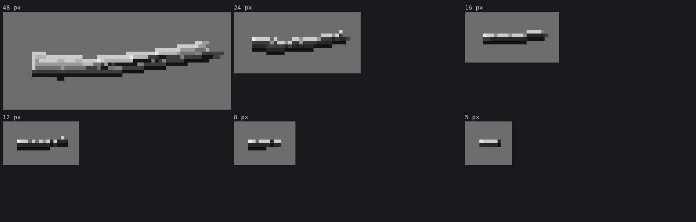

5. Small logs are glyphs
Trigger: a log whose projected diameter is under 4.5 px. In a scene, that's most of them.
The five classes need five rows. Below about 4.5 px the tracer aliases (a 3-px log comes out ragged, with holes along its length), and the classes collapse into noise. Ferrari's narrow limbs show what to do instead: the classes shrink to one pixel each, then drop off from the shadow side. So a small log is not traced at all. It is drawn as a stroke glyph along its projected axis.
# code/render.py
THIN_ROWS = {1: [6], 2: [6, 1], 3: [6, 4, 1], 4: [5, 6, 4, 2]} # rows from the lit side
THIN_ROWS_SH = {1: [3], 2: [3, 1], 3: [3, 2, 1], 4: [3, 3, 2, 1]} # in cast shadow / overcast
def thin_logs(cv, buf, logs, cam, light, sh):
for k, lg in enumerate(logs):
dmax = 2 * lg.rad.max() * cam.scale
if dmax >= 4.5:
continue
m = buf['obj'] == k
cv.mat[m] = GRAVEL # clear what the tracer drew (it aliases)
sx, sy = cam.project(lg.pts)
for i in range(len(lg.pts) - 1):
...
for j in range(n):
...
t = int(np.clip(round(dd * 0.9), 1, 4)) # thickness in px along the taper
xi = int(np.floor(x)); yt = int(np.floor(y - dd * 0.5))
rows = (THIN_ROWS_SH if (shd or light.overcast) else THIN_ROWS)[t]
for rr, v in enumerate(rows):
cv.mat[yt + rr, xi] = WOOD; cv.step[yt + rr, xi] = v
yy = yt + len(rows)
if t == 1 or t >= 4: # contact only where it reads
cv.mat[yy, xi] = GRAVEL; cv.step[yy, xi] = 0 if t >= 4 else 1
# a sawn end facing the sun: one bright pixel
...
Read the table as the cylinder shrinking:
- 4 px: lit edge, light, halftone, core. The rim and edge have merged.
- 3 px: light, halftone, and a dark underside.
- 2 px: light over dark.
- 1 px: a single light pixel, with a dark contact pixel under it. The smallest light-top, dark-bottom pair there is, and exactly Ferrari's stone rule.
The thickness follows the taper along the log, so a 5-px butt can end in a 2-px tip without a pop.

figs.py small. At 48 px long the log is traced (about 5 px thick). From 24 px down it is a glyph.
The trap. My first glyphs put a black contact row under every column, at every thickness. The small logs became heavy black bars, louder than the big ones. The contact now appears only where it reads as contact: under the 1-px glyph, where the light pixel needs its partner, and under the 4-px one, where it's a real log sitting down. The 2- and 3-px glyphs carry their own dark underside.
Where the handover shows. Between 4 and 5 px the traced log and the glyph don't quite agree about the thickness (the glyph is 0.9 × d), so in a pile at the right distance you can sometimes find a traced log beside a glyph log of nearly the same size that looks a pixel thinner. I didn't fix it. The distance sheet shows it:

A rule for everything that is small. In render.render, stubs thinner than about 0.6 px are dropped before tracing, and so are rootlets on logs under 3 px radius:
for lg in logs:
lg.limbs = [l for l in lg.limbs if l[2] * cam.scale >= 0.6]
if lg.rad.mean() * cam.scale < 3:
lg.rootlets = []
What is below a pixel does not exist. Before this, stubs on distant logs read as antennae (critic, round 10).